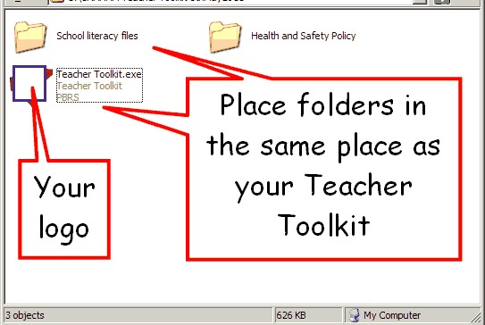

If you run the Teacher Toolkit from a network folder, you can share many other resources.
Simply create storage folders in the same place as the Teacher Toolkit

When the Teacher Toolkit starts, it will detect these folders and add them to the menu: